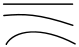

Беседа 3018 от 3877 · Беинса Дуно
Музикалния тон на живота
Добрата молитва
Имате ли някаква тема зададена? (– Нямаме.)
Пишете: „Различие между слабия и силния.“ По какво се отличава[т] слабият и силният?
Днес възприели ли сте достатъчно въздух? Като станахте как възприехте първата вдишка? Много важно е. Казва Писанието: „Бог вдъхна в ноздрите му и той стана жива душа.“ Защото тази вдишка, според състоянието на ума, може да бъде или полезна или вредна. По какво се отличават полезните или вредни работи? Един широк въпрос. Полезното за едного не е полезно за друг. Но общополезно, което е полезно за всички, е че всички искат да живеят. Всички същества, без изключение, искат да живеят. Начините, които избират за живеене, се различават. Запример, в какво седи една постъпка? Една добра постъпка, щом като не се реализира, тя произвежда зло. Едно поправено зло, произвежда едно добро. Това трябва да се докаже сега. От един трън, щом го посадите, може да служи като основа. Върху един трън какво може да посадите? Трънът към семките ли спада или към костилките? На глога, да кажем, какво може да посадите? Сега във всинца ви е залегнала идеята, че ние сме чада Божии и синове Божии. Какво означава чада Божии и синове Божии? Всинца тука сте певци. Но колцина от вас с пеене може да си изкарва[т] прехраната? Някои има, може да си изкарат прехраната. После как искате да почнете? Всинца искате да бъдете певци, да имате един отоплен салон, после публика. Хубаво е туй положение. Да кажем вие искате да знаете. Представете си, че нямате отоплен салон, искате да познаете силата на вашия глас. Какъв метод бихте избрали да опитате вашият глас, дали е силен? Според мене един глас, ако няма светлина, ако няма разширение на гласа, после, устои трябва да има. В този глас трябва да има подвижност, той трябва да има топлина, органическа топлина и психическа топлина. Този глас трябва да има сила. Силното нещо е разумно. Ако няма сега в гласа светлина, нямаш някоя идея. Ако нямаш някое топло чувство! Сега запример вие се спирате и казвате, че обичате някого. Питам сега какво обичате в човека? Кое се обича в човешкото съзнание? Казвам, от туй гледище ние го обичаме, заради неговия ум, светлина има. Вечерно време, един човек, ако носи свещ, обичаме го заради свещта. Зимно време носи огън, обичаме го заради огъня. Този човек, като се кача на гърба му, пък ме носи, обичам го. Вашите големи братя все ви носят. Вие считате конете, говедата за нисши. Те са ваши силни братя, които ви носят на гърба. Казвате: „Това са коне.“ Вие нямате понятие за един кон. Някой правят разлика, понеже със Словото Бог създаде животните, а човекът го създаде с ръцете си. Със Словото значи те са във висшия Божествен свят, там ги създаде. Каза и тъй стана. Дошли на земята толкоз смирени, че взели най-ниските служби, които се намериха за тях, а тия деца се качват по гърбовете. Те ходят и поглеждат. Ти сега, малкото дете мислиш, че то е кон. То, като те погледне, поусмихне се. Казвате: „Каква му е муцуната на него.“ Този кон, този твой брат се е маскирал да го не познаеш какъв е. Турил маската с козина, целият ден ти го хукаш, всичко говориш, той те слуша тебе. Ти, високообразования човек, религиозния човек, който много знаеш, хукаш го. Сега запример, гледам някой път, вие използувате от сегашното положение и казвате: „Туй не е според нашето вярване.“ Скоро имах разговор с една млада певица, свършила в Италия, та не ѝ върви нещо. Казвам: „Как да не ти върви?“ – „Не върви. Не върви.“ – „Рекох, каква е височината на гласа ти? Колко октави имаш?“ – „Две октави и половина.“ – „Рекох трябва ти още една октава и половина.“ Тя казва: „Това е невъзможно.“ За новите културни хора 4 октави трябват. Който иска да бъде човек на новата епоха, 4 октави трябва да вземе. Казвам сега на вас: вие по колко имате? Вие имате по една октава и половина. Първата октава, тя е за Бога, основна октава. Първата октава, първият тон, той е за Бога, който дава подтик. Ние казваме за „до“ – основния тон в света. Основният тон на учене, първият подтик, първият тон, който създал всичко. Първият подтик – „до“ е бащата на музиката. Вторият тон, те го турят „ре“, напрежение има. То е привидно така. Вторият тон това е майката, която създава формата на нещата. След туй, кой е третият тон. Ако се каже сега философски, тия неща са непроверени. Остават така. На тази, младата певица, казвам: „Защо не ти върви, кои са причините?“ Някои казват: „Не върви работата.“ Рекох ѝ: „Проверила ли си ти на публиката да се опреш? Ако имаш 4 октави на гласа си, да се спреш отвън на пътя, да опиташ, не да бъдеш с хубави дрехи, но скромно облечен, да опиташ дали ще обърнат внимание на гласа ти, щеше ли да има спънки?“ Тя седи и казва: „Аз вярвам в Бога, религиозна съм.“ Казвам: „Радвам се, че си религиозна.“ – „Каквото учи религията го изпълнявам.“ Казвам: „Ако беше старо време, когато хората вярваха в идоли, нали щяха да бъдат религиозни?“ Те вярват, ако се молиш година, две три на този идол, но той нищо не ти дава. Каквото започнеш, мислиш, че ще ти помогне. Ка кажем, ако аз вярвам в един Господ, който не може да ме настани в театъра. Ако ти си родена за певица и Господ те изпраща [там] да пееш, никой не може да те спре.
Сега и на вас ще задам въпроса: Колко октави ви е гласът? Да кажем в тази година, ако ви кажа, всеки един [от] вас, който ме слуша, да кажем ако вие имате 1 октава и половина, да придобиете още два тона, да притурите два тона. Не само да ги вземете в някой случай, но да ви бъдат естествени. Ако взема да ви изпитвам, аз ще ви покажа де ви е слабостта. Някой път гледам някои от вас „ре“ не можете да вземете хубаво. Тъй не се пее. Аз, някой път, като вземам „ре“, започвам да се движа. Ако няма едно колебание някъде „ре“ не е правилно. „Ре“ дава една истинска пластична походка на движението. Като тръгна да вървя и се клатя като гемия, „ре“ не е правилно. Когато не мога да пиша, да направя хубава форма с ръката, „ми“-то не мога да взимам правилно. Формата направиш правилно, „ми“-то вече е правилно. Ти не може да бъдеш мек човек, ако не може да вземеш „ми“. Всеки човек, който е груб, не може да пее „ми“. „Ако тази терца не мога да взема правилно?“ – Ти си малко груб. Казва: „Ти вземаш ли терца?“ – Щом си мек, може да вземеш. Ако си мек, терца може да вземеш. Казва: „Той кварта не може да вземе.“ Той е като заяк. Ако похлопа някой, ако хвърли камък, подскочиш. За да имаш мъжество трябва да вземе кварта. Не да ги вземеш, да се карат. Квартата има 4 основни точки, че нищо не може да ги разклати. – Това е квартата в музиката. – Това е терцата в музиката. Казва: „Туй е триъгълник.“ Този триъгълник трябва да го пееш. Ако ти вземеш една терца, минеш от „до“ до „ми“, ако „ре“ не прозвучи отподире, ти не си взел терца. Ти да прескочиш „ре“, но „ре“ само по себе си ще бъде отзвук и минаваш. Къде ще е най-голямото движение? Сега това са философски работи, които трябва да се приложат. Всяка една наука, която няма приложение в живота, за проверка, човек всякога може да се заблуди. Запример – дали аз съм мек, аз трябва да проверя своята мекота. Мекотата вече има пластичност. Казва: „Аз не обичам да бъда мек.“ Мекотата е необходима в живота. Мекотата дава почивка, пластичност. Без мекота, човек ако стане много твърд в живота си, той изгубва онова, хубавото, красивото, че винаги е недоволен. И хората стават нервни. Щом са нервни, не може да се прояви терцата в тях. Те вече станали квартианци. Защото геометрически вие като съедините една терца с кварта, вие образувате чов[ешкия] дом. Съжителство с хората не може да имате, ако не съедините една терца с кварта. Силата на човека винаги се стреми към меките работи. Човек се стреми към ония места, дето може да мине. Всеки човек избира пътя на малките съпротивления. И в живота терците, това са пътища на най-малкото съпротивление. Квартата е потребна за най-мъчните пътища. За тях употребяват кварта. Където напора е по-голям и в следствие на това човек не може. Да кажем вие не сте разположени да пеете. Ако имате едно препятствие вътре, как ще пеете, кажете? Но и препятствията в живота и те вървят по един музикален закон. И страданията и те вървят по един музикален закон и злото и то върви по един музикален закон. Няма нещо в света, което да не върви по един музикален закон. Дето има закон, отмерени са работите, има музика. Само, че злото на музиката, разрушава. Ако изпее човек една музика от злото, от тебе нищо няма да остане, ще се стопиш, както се стопява снегът при слънчевите лъчи. Ти може да се стопиш при една музика на злото, ти добрият човек, а пък и добрата музика като се изпее на един лош човек и той се стопява. Та и вие, които от вас имате най-новото оръжие да се борите, как се борите? Вие трябва да бъдете като онзи български момък. Среща го една мечка, пък той като я видял си казва: „Тя ще ме яде.“ Той обичал музика, свирил, че като видял мечката, казва: (Учителят пее.) „О, не ме яж мечко! Аз си имам една любима, какво ще каже? Тя не може да живее, мечко, без мене. Моля ти се мечко, не ме мъчи. Да не ме осакатиш, че няма да ме хареса моята любима. О, мечко, мечко, мечко, мечко!“ Сега, мечката гледала, гледала и се върнала. Връща се и той щастлив и казва на своята възлюблена: „Пях на мечката, че като запях, тя хукна да бяга.“ Питам сега, къде е погрешката на този български пример? Вие по същият начин пеете. Като ви срещне някоя мечка, по същият начин правете. Аз гледам тука, на ядене на трапезата, среща ги мечката. Започват да се мъчат, но естествено мечка ги е срещнала. Имаш ти едно малко неразположение. Една мечка те е срещнала. Погледнеш музикално. Едно време можехте така да пеете, но сега всеки човек, който пее криво, глобяват го. Глоба има по един лев за всеки човек. От невидимият свят има нареждане вече гледат всеки човек, който вземе фалшив тон, един лев глоба има. На ден, като направите стотина погрешки – стотина лева глоба. Сто деня по сто лева, това са 10 хиляди лева. А 300 деня, това са 30 хиляди лева, по[плюс] 60, това са 36 хиляди лева на годината. Десет години по 360 хиляди лева, ще ти върви глоба. От невидимият свят започват да турят едно, турят друго. Казвате: „Не върви.“ Не ви върви, по коя причина не ви върви? Не спазвате законите на малкият пръст. Не ви върви – не спазвате законите на безименния пръст. Не ви върви, не спазвате законите на средния пръст. Не ви върви – не спазвате законите на първия пръст. Не ви върви – не спазвате законите на палеца. Това са закони. Като разглеждам ръката на някого, виждам, че не му върви. Най-първо първият пръст се е изкривил – не му върви. После средният пръст и той се изкривил. Останал само безименният пръст. И двамата се опрели на него – не върви! Изкривил се е първия пръст. Защо се е искривил? Когато човек става вечен мърморко в себе си, ще се изкриви първия пръст. Когато търси в света само своето си право, пак се изкривява пръста. И ако [по] този закон аз наричам третия пръст, пръст на живота. Психологически или музикално, третият пръст това е първото родено дете. Първият пръст е бащата, вторият пръст е майката, безименният пръст е детето, малкият пръст е дъщерята. Туй е по отношение [на] физическия свят. В Божествения свят имаме друго едно определение.
Сега вие казвате, че обичате. Вие не може да обичате, ако не пеете. Да пееш значи да дишаш. Пеенето е закон на дишането. Когато Бог вдъхна в човека това е първия тон. Първия тон, с който започна живота е диханието. Музикално Бог го вдъхна. Първия тон, като го чу човек, той стана жива душа. Първия тон, който почувствува в себе си, в живота и животът придобива смисъл, той е основният тон на живота. Казва: „Кой е основният тон на живота?“ Музикално Бог го вдъхна. Казва: „Бог вдъхна диханието на живота.“ Музикално вдъхване. За пръв път човек чу този тих глас. Тъй го наричат. Тогава всички трябва да се повръщате към онова положение, от което сте излезли. Трябва да пеете. Господ казва: „Ще дишаш!“ Ще дишаш значи ще слушаш, ще внимаваш в радостите на хората. Ще се интересувате от радостите на хората и от скърбите. Вие ще изправяте техните скърби. Скръбта, това е един дисонанс от музикално гледище. Радостта е правилно взет тон. Скръбта в душата е един дисонанс. Следователно, препятствията как се поправят? (Учителят пее „до“.) Сега основният тон прав ли е? (Учителят пее „до“.) Тонът „до“ е напрежение. „Ре“ е движение. „Ми“ какво е? „Фа“ какво е? Българинът фа-то го взема хубаво. „Фа“-то е добиване. „Добиване“ – две значения има. Добива нещо, но „добива“, значи „доубива“. Добива значи още и ражда. Следователно, в туй отношение, тази дума има три значения. На английски някои думи имат 4 значения.
Казвам, от сегашното статическо положение на живота, ние се намираме в едно положение. Зимно време човек се вкочанясал, няма разположение, не му се ходи, животът няма смисъл. Някой път казвате, че животът няма смисъл. Да кажем, вечерно време се намирате в една мрачна къща, тъмна като рог, отгоре тъмно и отдолу тъмно. Нищо не виждате. Какво ви интересува? Влизам в положението. Човек няма стремеж. В тъмната нощ, ако проблесне една малка светла точка някъде, във вас ще се яви един стремеж. Та казвам: Всички имате такива мрачни неща. Какво правите тогава, в мрачната нощ? Казвате: „Трябва да се молим.“ Хубаво, знаеш да се молиш, но ако не знаеш да се молиш? Тази младата певица как да се моли? Казвам, трябва да се молиш. Молитвата не е нищо друго освен слизане. Ти си се качил по-високо. Трябва да се молиш, значи трябва да слезеш в онова положение, дето Бог е слязъл, за да започнеш отдето Бог е слязъл. Ако не започнеш оттам от дето Бог слиза, когато те е създал, то не е молитва. Молитвата не е нищо друго освен корегиране. Ще започне едно съзнание, ще слезеш в туй положение, в което си слязъл, трябва да обърнеш ума си в обратна посока. Човек върви в заблуждение. Казва: „Как да се моля?“ Молиш се [но] не може да постигнеш, понеже вървиш в крива посока. Да се обърнеш към Бога значи точно обратно. След като слезеш към Бога ще се обърнеш, към центъра. Ако се обърнеш, тогава Бог ще послуша молитвата. Ако излизаш от центъра навън, отдалечаваш се от Бога, молиш се, твоята молитва няма да бъде послушана.
После трябва да правите малко опити. Вие всичките в новото учение, в сегашната епоха, всички трябва да правите опити. Някой от вас може да посади ягоди, десетина или дванадесет стръка, да ги види как растат, да ги обработи. Някой от вас може да посади някое дърво. Ако нямате свое място, посейте в някоя чужда градина. Посейте в някоя гора. Ако го посеете и ако хората му направят пакост, то има причини. Ако не му направят пакост, има пак причини. Или посейте едно цвете и вижте как ще вирее. Обичате ли вие цветята или не? Казвам, може да правите много опити в живота си.
Вие сега имате идеята, че ще умрете. Умирали ли сте? Вие сте умирали по старому, но по нов начин не сте умирали. Сега кой е новият начин за умиране? Всичките тия работи ще бъдат наредени. Ти, когато умираш, ще изпееш последната си песен на земята. Ще повикаш приятелите си и ще изпееш за сбогом, като свириш до последния момент. Ще кажеш: „Довиждане. Кога ще се видим, кажете ми?“ Казвате: „Ще се преродим.“ То е неразбрана работа. Ще се намерите при онзи анекдот гдето една българска майка праща своя син в странство, в Германия. Не зная какво име да му турим. Доста имена има тук. Хайде, ще му турим името Богданчо. Бащата и майката прегръщат го, целуват го, Богданчо. Как ще се разделят? Бащата и майката отиват на гарата да го изпратят, тя припада, дига кърпа и ще тръгне. Връща се майката, припада в къщи. А тя, като се връща в къщи, той се върнал. Преди майка си се е върнал в къщи. Слязъл от трена и се върнал в къщи.
Помнете едно нещо: Никога не може да предаде[те] една идея комуто и да е, която не сте разбрали в себе си. Не може да предадете Божествената Любов, Божественото учение, милосърдие или музика. Туй, което вие сами не сте разбрали, туй което вие не го разбирате, не може да го предадете. Сухите въглища не предават огъня. Живите въглища не трябва да загасиш. Дотогава, докато вие имате в молитвата си някое малко безпокойство, това не е Божествено. Дотогава, докато имате едно малко съмнение в себе си, то спира реализирането на Божествените идеи, вътре в нас. С години искаш, не става нещо. Най-първо човек ще се освободи. То е един вътрешен метод. То не е за вас, то е за другите. Някой ходи, [ще го] корегирате. Казвате: „Ти се съмняваш.“ Има едно съмнение, от което хората не са свободни. Срещнеш един човек, не си уверен добър ли е или лош. От една страна гледаш, че е добър, от друга гледаш, че е лош. Кое е верно от двете страни? И едното е верно и другото. Срещнеш едного, 101 на сто ти си уверен, че този човек е добър. Срещнеш друг човек и мислиш, че този човек е лош. Сега, кое е верно? Трябва да работите да се оправят и лошите. Всеки човек, като изпее една песен и ти се схумиш, той е лош човек. Всеки човек, като изпее една песен и ти оживяваш, той е добър човек. Човек, при който не оживяваш, той е лош. Човек, при който оживяваш, той е добър. Човек при който има светлина е добър. Човек, при който има тъмнина, е лош. В дадения случай, лошият човек вие можете да му срещнете формата. Лошият човек, ти не може да го срещнеш и благодарете, че не го срещате. И добрия човек вие не можете да го срещнете. Доброто и злото са две неща. Вие и с двете влизате в съприкосновение. Но вие благодарете, че на доброто може да срешнете само неговата форма и на злото само неговата форма може да срещнете. Бог ни е препазил и от едното и от другото. Доброто не можем да го изтърпим. Доброто, ако дойде в тази пълната смисъл, не може да го изтърпим. И злото, ако дойде в пълната смисъл и него не можем да го изтърпим. Ние сме още от слабите хора, дето не може да изтърпим и злото и доброто. Какво значи изтърпяване? – Ако злото се качи на гърба ти, не може да изтърпиш. Ако и доброто дойде и двете ще се качат на гърба ти. Злото, като се качи на гърба ти и доброто, като се качи на гърба ти, ти ще мязаш на едно дете, което се е качило на кон и на детето му е приятно и на коня му е приятно, като те носи.
Сега искам да говоря върху някои неща, да не останете в противоречие със самите вас. По този начин, по който аз ви говоря, вие не трябва да имате никого в ума си. Всякога имай в ума си себе си. Като имаш едно огледало, гледай себе си, доколко ти си красив. Гледай да изправиш чертите си. Например, ако веждите ви са така:

Та в новото разбиране вие седите сега и казвате: „Остаряхме. Аз съм на 72 години.“ Че какво означава? Какво сте свършили в 72 години? В 72 години земята извършила една грамадна работа. В 72 години земята е обиколила около слънцето 72 пъти. Колко милиона километра е пътя на земята. Някой от вас знаят астрономия, които знаят може да кажат. Мисля, че се движи в секундата с 29 и половина хиляди километра в секунда. И тогава може да изчислите. За една година какъв път изминава. Ще изчислите 365 деня, колко часове, колко минути, колко секунди правят и ще го умножите по 29 и половина и ще намерите този грамаден път, който изминава земята за една година. Този път земята го извървяла, но ти какво си извървял? Казваш: „Седемдесет и две години имам. Седемдесет и два пъти обиколих около слънцето.“ Земята обиколила, но ти? Ти може да се хвалиш с 72 години, но земята тичала, а ти, че си се движил и ти да си тичал, но ти си седял и казваш: „Седемдесет и две години имам“. И нищо не си свършил в това време. За какво си мислил? Като дете ти мислиш само да ядеш и да кряскаш на майка си, да ѝ заповядваш. Като станеш възрастен, започваш да търсиш младите моми и да кряскаш на момите. След туй ставаш учител, седят децата наоколо, да им говориш, да им кряскаш. И като остарееш, започваш да говориш само за своята старост. – „Олеле, олеле?“ Старецът да каже: (Учителят пее.) „Аз имам една болка в краченцето си. Колко ми е приятна тази болка! Малки дечица, колко ми е приятно!“ Казвате: „Човек, като стане възрастен, изгубил му се гласът.“ Всеки човек, който не върши нищо, той е стар. Да се подмладиш значи вършиш нещо, да съзнаваш ония блага, които Бог ти е дал и да благодариш. Като пипнеш гърлото, да благодариш, да пееш за себе си. (Учителят пее.) „Иде Великден, обуща си нямам, а шапката ми е сега скъсана. Палто си нямам, но и пари си нямам с какво да ги ушия.“ Ако ти пееш на една болест, на едно състояние, какво ще стане? Всичките страдания, ако ги турим на музикално изпитание, друга песен ще ни пеят. (Учителят пее.) „Дотегна ми в кални улици да ходя. Дотегна ми бос да ходя!“ (Пее го в български мотив.) На вас тъй казвам, че ми е дотегнало. Сега какво трябва да се изпее? Ха, сега? – „Давай, давай и всичко давай.“ Ще си хванете средния, безименния и третия пръст, ще ги хванете и ще изпеем „Давай, давай, всичко давай“. Ще започнем по-енергично. Хванете третия пръст, ще го хванете и ще изпеем „Давай, давай“ до „чисто семе пшеничено“. Ще хванете втория пръст и ще пеете „Давай, давай“ до „чисто семе пшеничено“ и ще хванете и първия пръст и ще изпеем „Давай, давай“ до „чисто семе пшеничено“.
Та казвам: Първата идея, дето искате да пеете, искате да вършите каквато и да е работа,вложете във вас основната идея. Мислете, че Бог е вдъхнал във вас онази свещенна мисъл, която прониква от Бога. Вдъхновението е от Бога. От там започнете. Всеки ден трябва да корегираме, понеже имаме фалшив тон. Станеш сутринта, неразположен си. Фалшив тон имаш. Станеш сутринта, страхуваш се, фалшив тон имаш. Станеш сутринта нямаш никакъв импулс, като вземеш основния тон на живота, животът ти ще има смисъл и радостта ще дойде, ще имаш подтик да работиш. Целия ден ще работиш и вечерта, като се върнеш, ще бъдеш доволен. Казва: „Пейте и възпявайте Господа в сърдцето си.“ (Учителят пее.) „Давай, давай всичко давай“, това е един начин. Как може да го изпеете другояче? Като пееш „Давай, давай“ да почувствуваш, че даваш. На себе си пей: „Давай, давай.“ (Учителят пее „Давай, давай“.) Ще концентрирам своята мисъл. Аз съм земледелец, ще концентрирам своята мисъл, ще кажа: „Давай, давай от хамбаря!“ Ако учиш някого, ако учиш децата, пееш: „Давай, давай“. Значи от себе си, което даваш. Говориш ти за любовта. Тази любов ти как ще я проявиш? Вземете основното, моралът на музиката какъв е? Ти, като идеш при някой човек, изведнъж няма да му пееш. Ако идеш при някой човек, кажи: „Искам да ти попея.“ Ако той ти каже, пей му. Ако пееш без той да иска, правиш музикално престъпление. Той, като дойде при тебе, ти ще кажеш: „Мога ли да ти пея?“ Ти искаш един човек да го прегърнеш и да го целунеш. Попитай го: „Мога ли да те прегърна и да те целуна?“ Ако го целуваш без да го питаш, ти правиш музикално престъпление. Млада мома, красива, надолу гледа. Кажи: „Мога ли да те погледна?“ Младият момък може да каже: „Мога ли да те погледна?“ Ако погледнеш без да искаш, правиш музикално престъпление. Вие нарушавате всичкия Божествен порядък. Нямаш право ти да гледаш. Като вървиш, ще вървиш със затворени очи. Кажи: „Може ли да си отворя очите?“ Тези са методите. В себе си ще имате Божествено съзнание. Вие влизате в един свят. Ти като срещнеш един брат, още отдалече трябва да предизвикаш в ума си най-хубавите възпоменания, най-хубавото от неговият ум, най-хубавото от неговото сърдце, най-хубавото от душата му, че тогава ти да гледаш. Той [да не] ти напомня нещо много лошо.
Та казвам, в музиката защо не може да пеете? Щом хванете средния пръст, започва да те безпокои някой от силите. В третият пръст има сили, в първия пръст има благородство. Някой път певците прекръстосват си пръстите. Някой път се стиска третия пръст. Някой път – средния пръст, а някой път стискат първия пръст. И те хубаво пеят, но онези, хубавите певци, държат свободно, едва допират, държат свободно пръстите си, а други стискат ръцете си. Някои певци не може да пеят, понеже, стискат средния пръст. Той произвежда страх. Някои стискат безименния пръст, сила дава, гласът им е по-силен, няма мекота в тях. Някои стискат първия пръст. Средният пръст дава издържливост на тона, безименният пръст дава мекота и ценност на тона. Казвам, музиката вземам като едно състояние, за да може да смените лошите положения, които всеки ден черната ложа образува. Всеки ден черната ложа, сутрин като станеш, ще развали основния тон, ще даде фалшив тон. Като вземеш този фалшив тон, работите не вървят. Музикално като станете, може да имате разположение да пеете. (Учителят пее: ) „Неразположен съм тази сутрин! Не зная коя е причината. Неразположен съм. Нерзаположен съм. Неразположен съм. Съм. Съм. Съм.“ Някой път се карате и дигате шум. Кажете музикално: „Кажи, пей! Искаш да ти кажа нещичко.“ Не се срамувайте от хубавото в света.
Научете се да дишате. Не може човек да диша. Много методи има. Не може да дишаш, ако нямаш музика в себе си. Той е основният тон. Равновесие има. Дотогава, докато пееш, ти живееш. Престанеш ли да пееш, ти си мъртав, защото пеенето е дишане. Ще пееш, ще благодариш на Бога. Някой път, дълбоко в душата си, благодарете музикално, че въздухът влиза и излиза от вас. Щом дишаш правилно, умът възприема мислите. Щом дишаш правилно, сърдцето ти възприема чувствата. Душата ти и тя диша. И духът ти и той диша.Четирима в тебе има, които дишат едновременно, ти си петият. Духът ти диша най-първо, душата ти диша, умът ти диша и сърдцето ти диша. А пък ти, самият човек, на земята, облечен в плът и ти дишаш. И те като дишат, ще се научиш да дишаш, както Духът диша, да дишаш както душата диша, да дишаш както умът диша. Да дишаш както сърдцето диша. Научи се да пееш, както духът ти пее, да пееш, както душата ти пее, както умът ти пее и както сърдцето ти пее. Сърдцето, като пее, трагично пее. В него има трагедия. Знаеш какво значи трагедия. То казва: (Учителят пее.) „Дотегна ми бос по улиците да ходя. Като отивам в къщи четири деца имам, всичките към мене се обръщат: Татко, хляб ни дай, а пък на жена ми сълзи потекли, тази горката майка: Татко хляб дай на децата. Те боси ходят.“ Как ще се разреши трагедията? Това не е така. Ние, които нямаме деца, лесна работа. Другия път ще продължим.
Отче наш
32 школна лекция, 17 май 1939 година, София, Изгрев